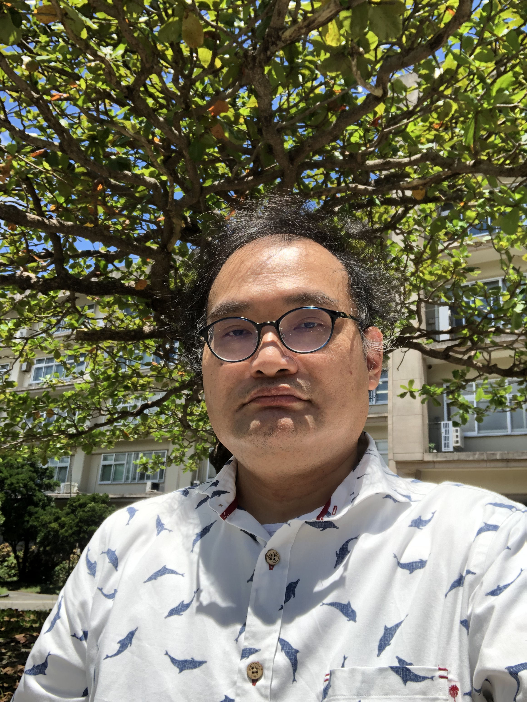

もともと、児童・生徒が漠然と「本当に教科書の記述の通りなのか自分の手で確かめたい」と思う学習内容に関する実験教材・教具の開発・改良を研究してきました。そこからへき地・複式教育、生活科、理科、食育などでも教師教育実践研究を行ってきました。
特別な課題の解決ではなく、日常の授業実践に生かせる知（何かしらのもの）を自らの手で学べる教師をどのように育成するかという問いがあり、それに基づいていろいろ行っております。
成長したいと思い悩んでいる現職教員とともに悩みながら問題の緩和・解決に資する支援
理科教育における実験教材・教具の開発・改良への助言
へき地・複式学級における教師教育実践の支援
特別なことではない日々の教育実践に係る諸問題について共に悩んでいける関係性を基に、次から次へと生じる諸問題に向き合える教員の育成に寄与できればと思っております。

教師教育・理科教育・実験教材開発に関するご相談を承っています。